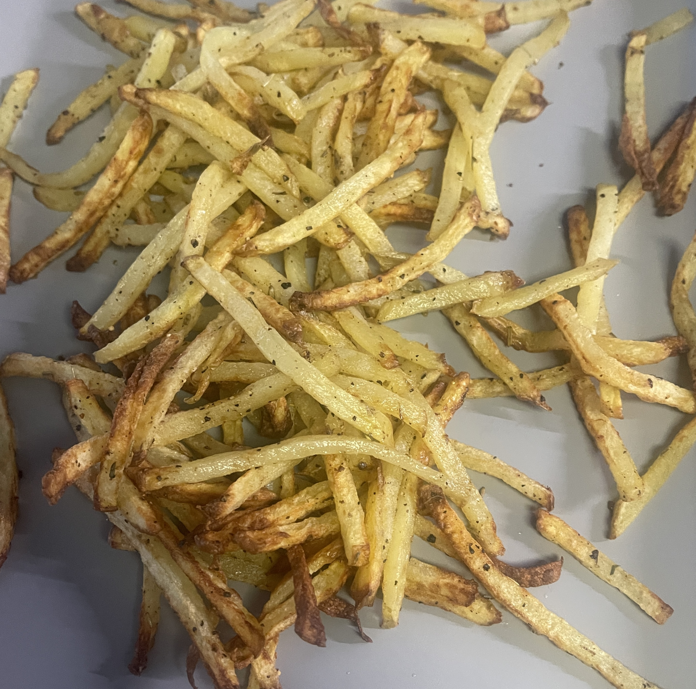

Air Fryer French Fries

Description:
Love french fries? You're in good company! With this simple recipe you will be able to
make restaurant quality fries at home for less than the price of an order of fries from
your favorite fast food restaurant! This recipe will allow you to get creative with
seasoning, but you will love this even if you only use salt and pepper! This recipe does not
include recommended ingredient amounts, it can be scaled from one potato to one hundred;
you will just need to use your best judgement for oil and seasoning.
Tools Required:
- Air fryer
- Mandoline slicer (optional, but reccommended)
- A large bowl
Ingredients:
- Yukon Gold or Russet potatoes
- Vegetable oil
- Salt
- Pepper
- Additional seasonings, you are welcome to experiment with your favorites!
Directions:
- Thoroughly wash your potatoes with cold water and a clean scrub brush.
- Slice your potatoes with the mandoline. Many mandolines will include a french fry setting, but if not
just cut them to your preference! This step can be done by hand with a knife as well; if using a knife
I recommend trying out wedges! Different size/shape potato slices will not change the rest of the recipe.
- Put your sliced potato in a large bowl, apply vegetable oil, salt, and pepper. If you are including additional
seasonings add those now! I like using Old Bay and Herbs De Provence.
- Preheat your air fryer to 375°. Once preheated, spread a thin layer of fries along the bottom of the tray; I
recommended avoiding layering the fries so they will be nice and crispy. You will likely need to do more than one
cycle to cook all of your prepared potato slices. Add additional seasoning on top and cook for 15 minutes,
thoroughly shake the tray halfway through cooking to ensure fries uniformly cooked.
- Serve and enjoy! If you did multiple cycles in the air fryer, you can put all the fries in the tray and cook
for an extra minute or two to make sure they're nice and warm